Institut für Zuverlässiges Rechnen
Leiter:
Prof. Dr. Siegfried M. Rump
INTLAB DEMOS
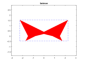
A general demo of some features of INTLAB.
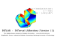
Details about interval arithmetic.
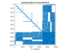
Some examples of interval computations.
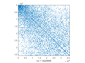
Some larger examples with INTLAB.
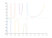
Accurate real and complex interval standard functions in INTLAB.
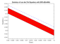
ODEs: The AWA toolbox.
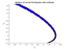
ODEs: The Taylor model toolbox.
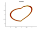
Global (un-)constrained optimization and all roots of nonlinear functions.
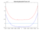
The polynomial toolbox (univariate and multivariate polynomials.
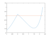
Gradients: automatic differentiation of multivariate functions.
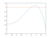
Hessians: automatic differentiation with second derivative.
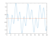
Taylor series: automatic Taylor coefficients.
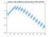
Affine interval arithmetic.
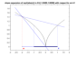
Slopes: automatic slope generation.
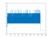
Utility routines.
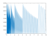
fl-numbers: k-bit point and interval arithmetic.
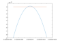
Long numbers: a non-optimal multiple precision package.
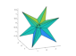
Accurate summation and dot products.